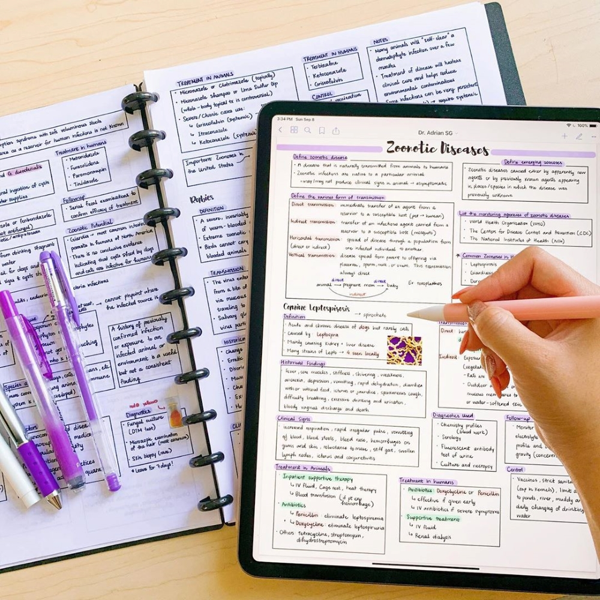
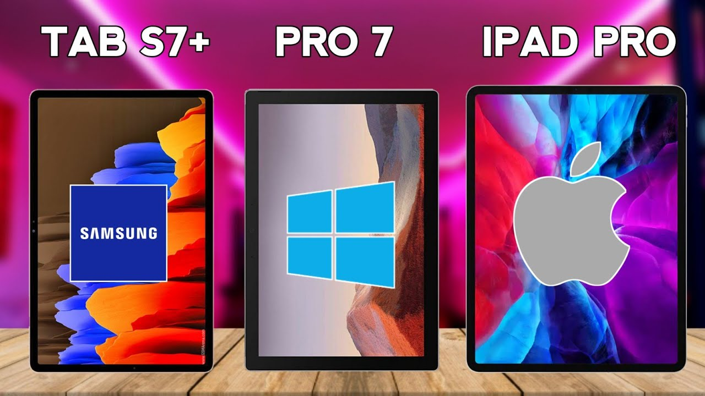

Will Regular Note-Taking Methods Become Extinct ?
September 30, 2021 by Kajae Page

Considering the recent Coronavirus pandemic, students, as well as office-based professionals, need devices that can handle almost all their needs. Therefore, making the demands for note-taking tablets at an all-time skyrocket high. These tablets are designed with the intention of replacing traditional notebooks, textbooks, and sticky pads. Thus, allowing users to digitize handwritten notes as well as organize them for safekeeping and easier searching. Furthermore, note-taking tablets also allow users to save notes across multiple devices and apps. Thus, keeping important information safe from being accidentally thrown away or lost. I know many of you are probably wondering, “How do I keep confidential information safe ?”. Well, many of these note-taking tablets have built-in security features like biometric login options via facial recognition software, fingerprint readers, as well as drive encryption for added security. Now the question that everyone is concerned with is, “ Will it give the same experience as writing in a regular notebook ?”.
Well, writing on a smooth (glass) surface will never be the same as writing on rough paper. However, these note-taking tablet manufactures also thought about this. They offer a matte screen protector that will give the tablet screen a paper-like feeling. Additionally, there is a wide range of stylus that can support the note-taking tablet. Thus, the user can find a model that suits their work style and needs. That is multiple button inputs, pressure and tilt sensitivity, palm rejection, and wireless charging. Then there is the question “ Does taking digital notes affects comprehension and memory?”. According to the research conducted by the Centre for Information and Neural Networks, there was no significant difference in the scores of comprehensions and memory tests performed after taking notes on a tablet vs. paper. So, with all this said do you believe that regular note-taking methods will become extinct?
Top 3 Tablets for Note-Taking and Creative Illustrations
October 01, 2021 by Kajae Page

With the current rapid development in technology, you no longer need to rely on pen and paper for note taking and creative illustrations. Nowadays a much more portable and practical option is a tablet and stylus. This portability allows you to jot down an idea and work from anywhere. With the right tablet, you can become more productive and take charge of your workflow. Additionally with digital notes, there will never be a need for you to worry about misplacing anything. However, with so many tablets and stylus to choose from, selecting the right one for you can be tricky. Here is a guide of the top 3 note-taking and drawing tablets on the market right now. In my view, the best premium tablet for handwritten notes and creative illustration is the iPad Pro. Its hard to beat Apple when it come to tablets for versatile and multipurpose use. However, the Samsung Galaxy S7+ clearly comes second best for note-taking and creative illustration from Android. In addition to this, for a more budget friendly option the Samsung galaxy S6 is another great option. Finally, coming in 3rd is the Microsoft Pro 7. The number one spot of course goes to the iPad Pro. This tablet is an overall monster with it being the slickest and most responsive models on the market. It has a user-friendly interface and some of the most powerful features a tablet has to offer. However, what sets it apart from the rest is its high-resolution screen (2732 x 2048 pixels) and 120 Hz refresh rate making it an incredible experience.
Furthermore, it has a massive display that is 12.9 inches of screen making it plenty of room to work with. You cannot go wrong with the Apple iPad Pro for creative works or notetaking since it gives the most stunning results when paired with the Apple Pencil. However, cutting in close for 2nd place is the Samsung Galaxy Tab S7+. If you prefer to use Android technology, then this is the fantastic cheaper option to the iPad Pro that rivals it in many ways. It has a large 12.4-inch AMOLED display which is vibrant and has a super-fast refresh rate. I think any student or artist will love the seamless finish to their work with the included S pen. Thus, no extra spending is required! Finally taking the 3rd spot is the Microsoft Surface Pro 7. It is without a doubt the finest tablet that Windows can over to windows users. The edge-toedge AMOLED display makes for more working space and incredible resolution. This along with the Surface Pens make writing and drawing smooth on a tablet. Its responsive and has excellent palm rejection, so users and write and draw quickly with the most precision and accuracy. Hope this guide helped you to find the tablet of your dreams!!!